Good for you, good for the world
About us
Kentish Town Vegbox is a community-owned co-operative connecting Camden and Islington with fresh, sustainably grown fruit and veg – direct from UK farmers, since 2012.
Our story
Vegbox was set up in 2012 by members of Transition Kentish Town, a local community group working on sustainability projects. Out of that work came a simple idea: make it easier for people in Camden and Islington to buy sustainably grown fruit and veg directly from UK farmers. We've been doing just that ever since.
When you join Vegbox, you're not just getting a bag of fresh, flavour-packed fruit and veg each week – you're joining a movement to create a fairer, more sustainable food system.
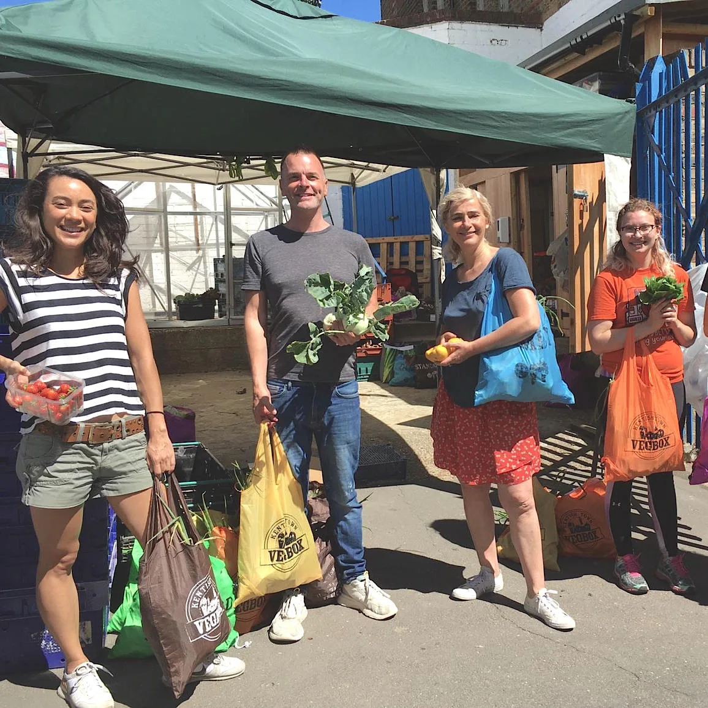
We're a co-operative
Our customers are our members, and as a member you have a say in how Vegbox is run. Every member has one vote at our Annual and Extraordinary General Meetings, where we vote on proposals, elect the board – and enjoy fresh wood-oven pizzas. Members can also request an EGM if there's something they'd like the co-op to discuss, and any member may stand for the board.
In 2022, our members voted to create the Solidarity Fund, widening access to sustainably grown food through our low-income discount.
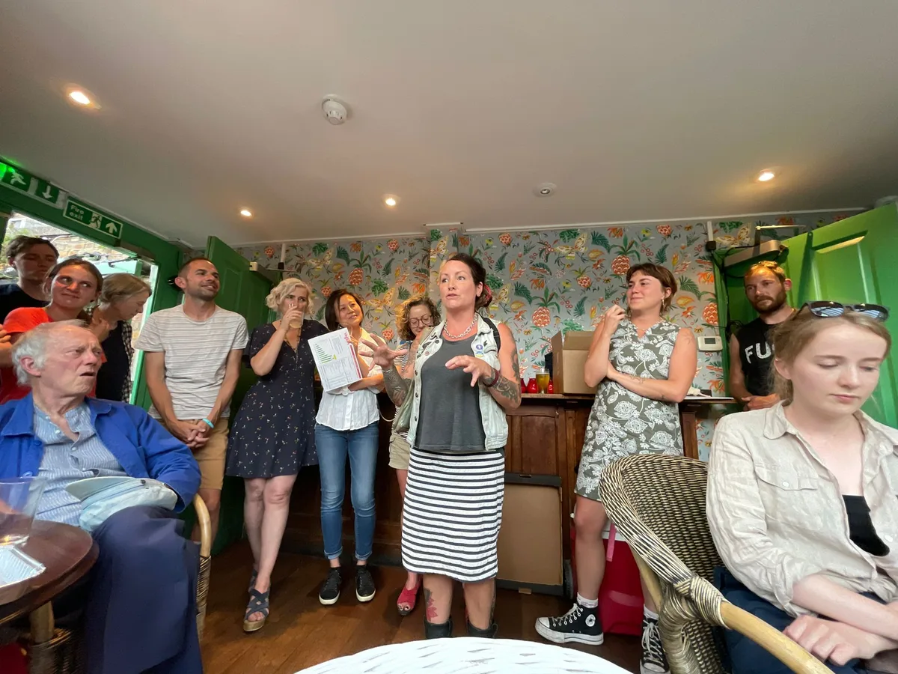
What we stand for
A fair deal for farmers
We pay our farmers around three times more than supermarkets do. In the supermarket system, farmers receive about 10p of every customer pound – with us, it's around 60p.
Meaningful local work
Every member of our team in North London earns the same wage, above the London Living Wage.
Nothing wasted
Our farmers harvest only what's needed each week, making Vegbox one of the least wasteful ways to get fresh fruit and veg into the city. Any surplus goes to local partners like the community benefit society Life After Hummus.
Open to everyone
We accept Healthy Start vouchers, offer a low-income discount through the Solidarity Fund, and deliver to members who can't leave home to collect their bag.
Meet the board
Our board is elected by members each year at the AGM, meets monthly, and oversees everything Vegbox does.
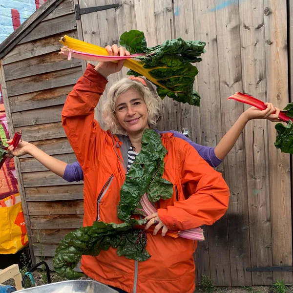
Ruth
Co-founder of Vegbox. Ruth coordinates the Wednesday packing at The Thanet Community Centre and manages the weekly veg ordering. Trained in design at Central Saint Martins before a Master's in Food and Nutrition Policy, she also founded Eat Club, a London youth food-education charity.
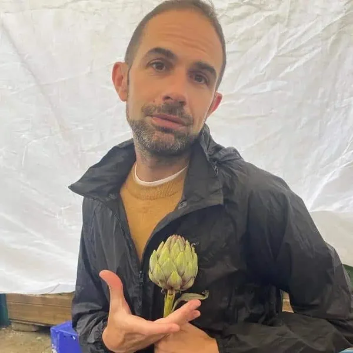
Tom
Tom co-founded Vegbox in 2012, having first co-founded Transition Kentish Town, the community group the co-op grew out of. He is a trustee of The Thanet, the community centre where the veg gets packed every Wednesday, and loves reading, arguing about politics, camping and festivals, and playing the ukulele badly.
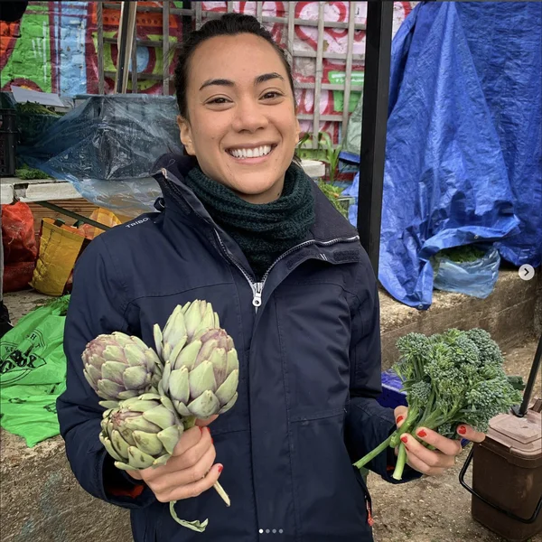
Mariangela
Mariangela grew up in central Italy on her family's farm, surrounded by olive oil, fruit and vegetables. She joined Vegbox in 2016, drawn by its seasonal food and minimal plastic, and has served on the board since 2020, bringing expertise in PR, marketing, communications and events.
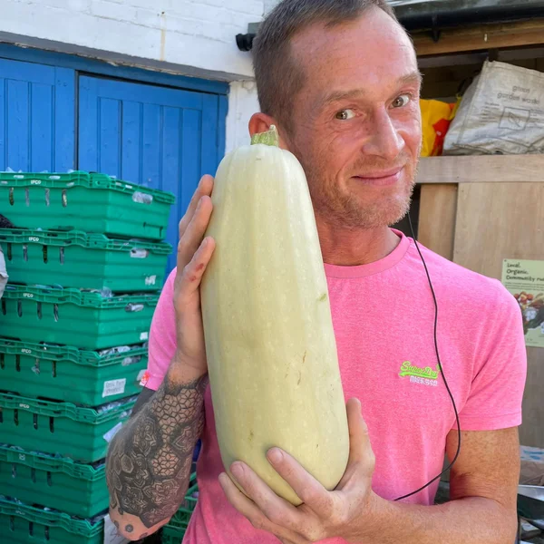
Phil
A dedicated member of the packing team for almost nine years, renowned for his focus and packing speed – sometimes a little too fast. Phil handles finances, payroll, a bit of HR and the volunteer rota.
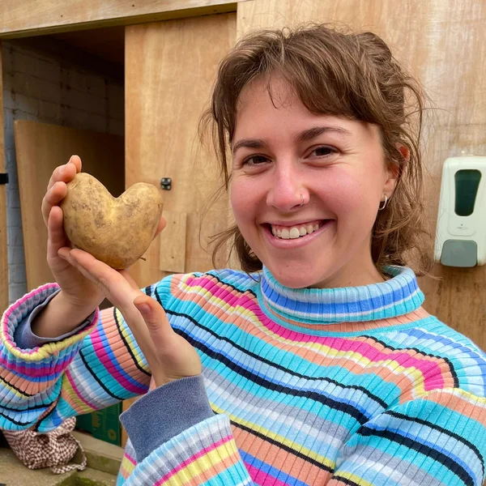
Morgan
Morgan joined the board in 2022, having first volunteered during her university years. Passionate about organic farming, food justice and community resilience, she works for Ooooby, enjoys crafting, knitting and folk dancing, and dreams of one day starting her own farm.
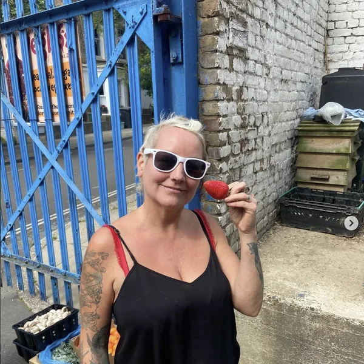
Carmel
A packer for many seasons and now on her second stint on the board, Carmel says Wednesday in the packing yard is her favourite day of the week. A DJ and punk musician, she uses her platform to enthusiastically promote Vegbox.
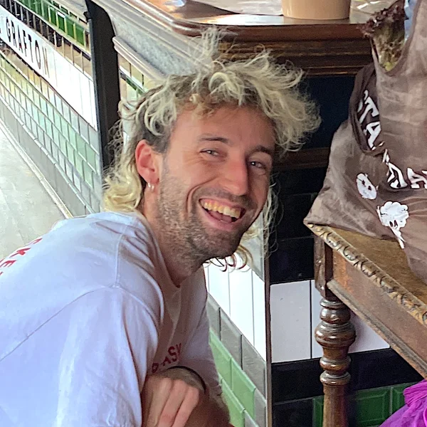
Caleb
Caleb grew up in Archway and joined as Marketing Coordinator in 2021. A co-operative enthusiast, he also works as a freelance co-op developer with Principle Six and hosts the podcast Punchcard. At Vegbox he champions our members and community through events and collaborations.
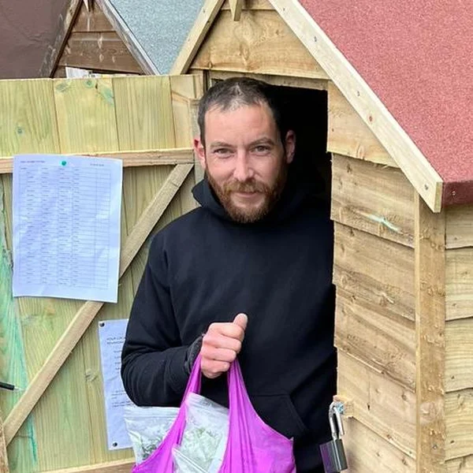
Thomas "Shed Master"
A proud member since 2019, drawn by the seasonal produce and ethical approach. Thomas also rides for Neko Home Delivery, bringing veg bags to members' doors.
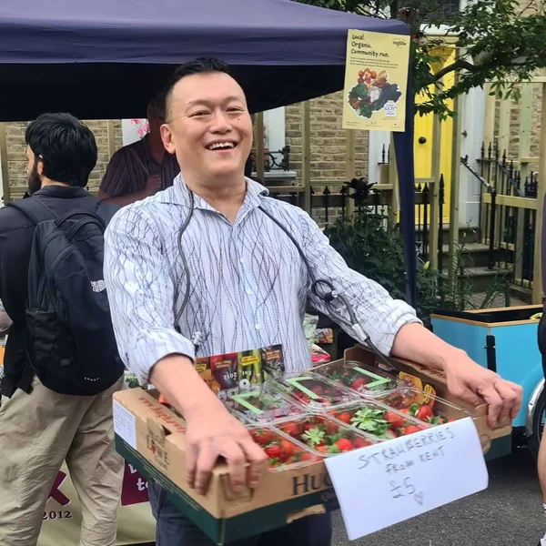
Roland
Our newest board member. Roland is an independent business consultant, coach and writer with over two decades of experience across the public and private sectors. He grew up in Singapore, and the kohlrabi from his veg bag makes excellent Singaporean fried carrot cake.
Join us
Become a member and get a weekly bag of the freshest fruit and veg the UK's seasons have to offer.
Sign up now